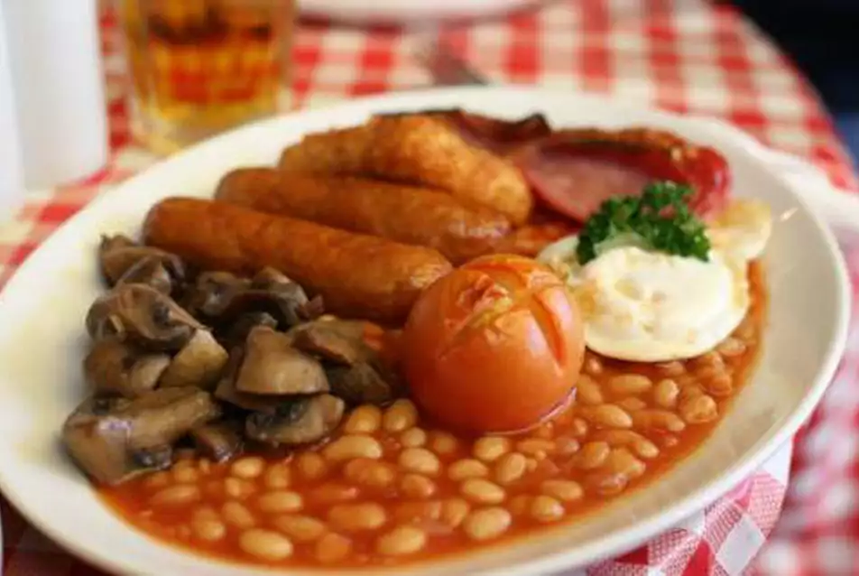

Full English Breakfast

Description
Are you an Englishman? Perhaps a hungry yank? Doesn't matter; grab some cooking implements and make this delicious breakfast. Easy to make, easier to eat!
Ingredients
- 2 medium pork sausage patties
- 1 tomato
- 2 tbsp butter
- 2 slices bacon
- 4 oz frozen hash browns, thawed
- 6 oz sliced fresh mushrooms
- 1 can baked beans
- 1 large egg
- 2 slices bread
- salt and freshly-ground black pepper to taste
- 1 sprig fresh parsley, chopped
Steps
- Preheat oven to 425 degrees F (220 degrees C)
- Brown sausages on all sides in a frying pan over medium heat for 5 minutes. Transfer to baking dish
- Bake sausages in preheated oven for 10 minutes
- Score a cross into tomato and place, cross-side up, in baking dish with sausages
- Bake sausages and tomato for 10 minutes. Turn off oven, but do not remove sausages and tomato
- Meanwhile, melt 1 tbsp of butter in frying pan used to brown sausages. Fry bacon, hashbrowns, and mushrooms over high heat until bacon begins to crisp, hash browns turn golden, and mushrooms soften after approximately 7 minutes. Transfer to oven to keep warm
- Pour baked beans into a small saucepan and cook over medium heat, stirring frequently, until heated through
- Crack egg into skillet over medium heat. Cook until outer edges become opaque, about 1 minute. Cover, reduce heat to low, and cook until whites are set, about 4 minutes
- Toast bread and spread remaining butter over
- Combine sausages, tomato, bacon, hashbrowns, mushrooms, beans, fried egg, and toast on a warm plate to serve. Season with salt and pepper to taste, garnish with parsley, and serve immediately